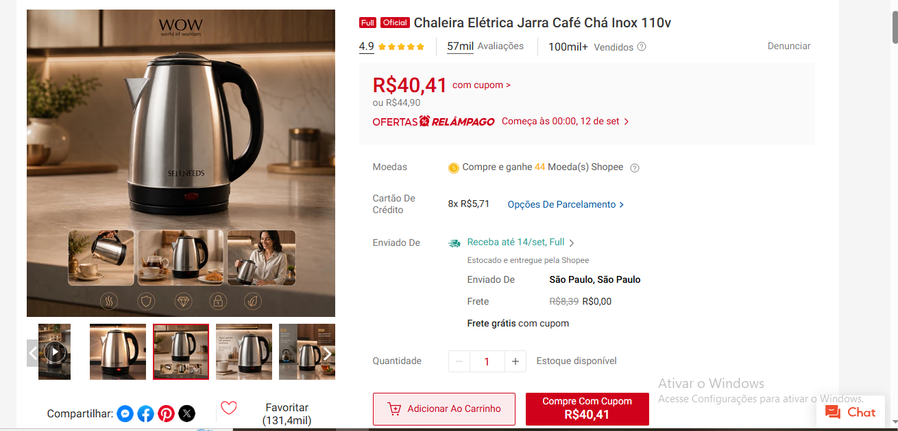

Água quente para suas receitas
Aqueça a água e use no preparo do café coado, do chá e de outras bebidas.
CHALEIRA ELÉTRICA • INOX • 110 V
Do café da manhã ao chá no fim do dia: aqueça a água na chaleira elétrica e prepare sua bebida do seu jeito.
★★★★★ 4,9/5na Shopee*Conferir oferta na ShopeeConfira preço, cupom e entrega no anúncio.

nota no anúncio*
avaliações no anúncio*
vendidos no anúncio*
PEQUENAS FACILIDADES. BOAS PAUSAS.
Aqueça a água e use no preparo do café coado, do chá e de outras bebidas.
O visual em inox com detalhes pretos combina com diferentes estilos de cozinha.
Compradores destacam o aquecimento e a facilidade no dia a dia. Veja o que eles contam abaixo.
EXPERIÊNCIAS DE QUEM COMPROU
Trechos de avaliações reais do anúncio.
Os relatos refletem experiências individuais.
“Muito satisfeita, veio perfeita, esquenta bem, ótima qualidade, chegou no prazo adorei e recomendo.”Ver avaliação original
“chegou em perfeito estado e funciona muito bem”Ver avaliação original
“facilita muito a vida esquenta rapidinho”Ver avaliação original
*Nota, avaliações e vendas exibidas no print do anúncio fornecido em 11/09/2026. Os números podem mudar. Trechos selecionados; abra os registros para ler o contexto completo.
ANTES DE ESCOLHER
O título do anúncio informa 110 V. Não a considere bivolt. Confira a opção escolhida e a tensão da sua rede elétrica antes da compra.
No print fornecido, o anúncio mostrava R$ 44,90 ou R$ 40,41 com cupom. Esses valores são uma referência da captura: preço, disponibilidade e elegibilidade do cupom devem ser confirmados na Shopee.
O frete e o prazo dependem do endereço, dos cupons e das condições do anúncio. Informe seu CEP na Shopee para consultar o total e a previsão de entrega.
Confirme a capacidade nominal, a potência e as instruções na descrição do vendedor. Os prints não trazem especificações suficientes para garantir esses dados. O tempo de aquecimento pode variar conforme o volume de água e as condições de uso.
Abra o anúncio na Shopee para consultar a galeria e as mídias publicadas pelos compradores antes de decidir.
Ver anúncio completo ↗SEU PRÓXIMO CAFÉ COMEÇA AQUI
Chaleira elétrica inox • versão anunciada: 110 V
Quero conferir a ofertaCompra finalizada na Shopee. Consulte as condições atuais.